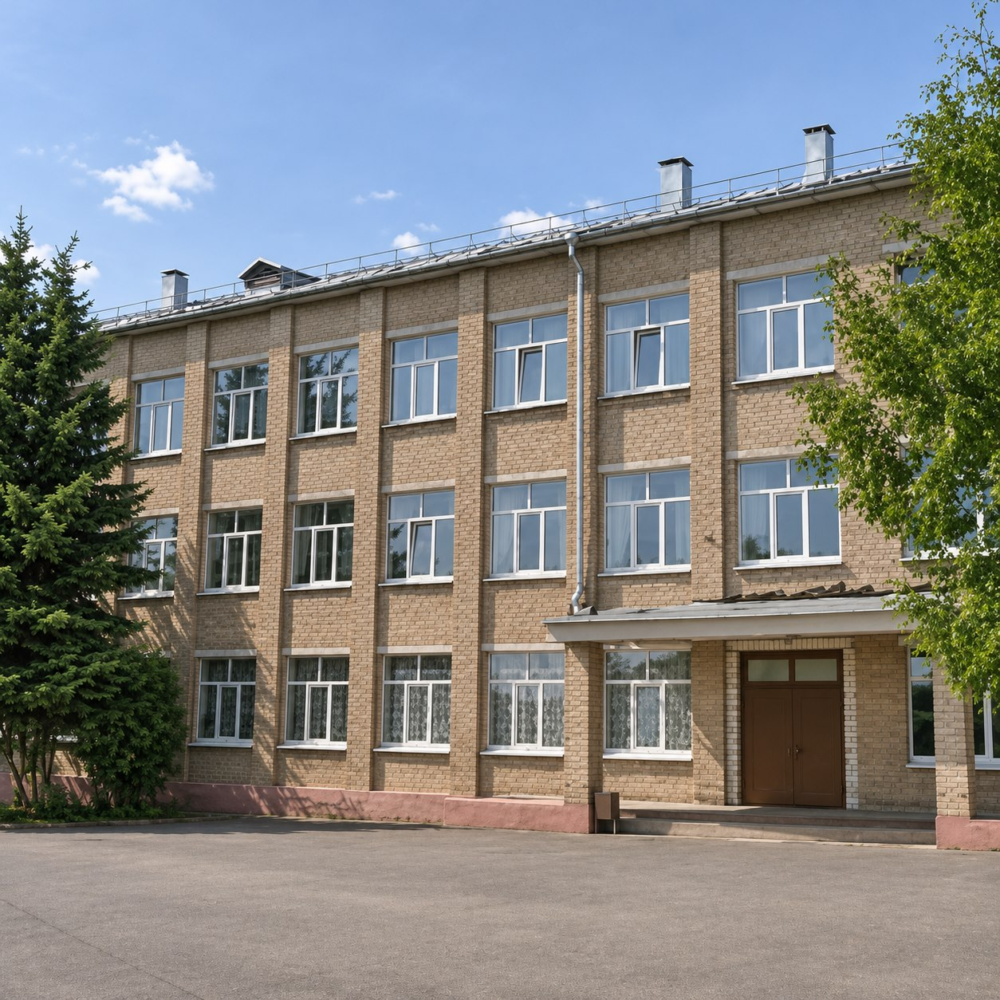

Деятельность
Образовательные программы, учебные планы, воспитательная работа и внеурочные занятия.
Информация для родителей и учениковПознакомьтесь со школой, найдите информацию о поступлении и узнайте, как с нами связаться.

Муниципальное бюджетное общеобразовательное учреждение «Средняя общеобразовательная школа №2 г. Рузы».
Документы, сведения об образовательных программах и актуальные объявления размещаются на официальном сайте школы.
Сведения об организации, документы школы и актуальные объявления.
Перейти на сайт школыКак уточнить условия приёма и подготовиться к знакомству со школой.
Вопросы и ответыТелефон, электронная почта и адрес — всё для прямого обращения.
Открыть контактыОбразовательные программы, учебные планы, воспитательная работа и внеурочные занятия.
Информация для родителей и учениковШкольные инициативы, ученические работы и мероприятия. Действующие проекты и условия участия можно уточнить в школе.
Узнать об участииПромежуточная аттестация и государственная итоговая аттестация. За сроками, порядком проведения и документами обращайтесь к официальным объявлениям школы.
Открыть официальный сайтУстав, локальные акты и документы для поступления. Действующие редакции и формы ищите на официальном сайте школы.
Перейти к официальному источникуУсловия обучения, питание, оснащение и доступность здания. В фотогалерее есть снимки входа с пандусом и тактильного плана помещений.
Посмотреть вход и план школыНажмите на фотографию, чтобы увеличить её.
Источник фотографий: карточка школы №2 на Яндекс Картах. Снимки разных лет; внешний вид школы мог измениться.
Свяжитесь с администрацией по телефону +7 (49627) 2-33-85. В школе помогут уточнить наличие мест, сроки приёма и перечень необходимых документов.
Актуальную информацию смотрите на официальном сайте школы. Если сайт временно недоступен, уточните сведения по телефону или электронной почте.
Школа находится по адресу: Московская область, г. Руза, ул. Ульяновская, д. 22. В разделе контактов есть ссылка на карту — она поможет построить маршрут от вашего местоположения.
Есть вопрос о школе или поступлении? Позвоните, напишите или найдите нас на карте.
Построить маршрутКонтактные сведения: реестр муниципальных учреждений Рузы.